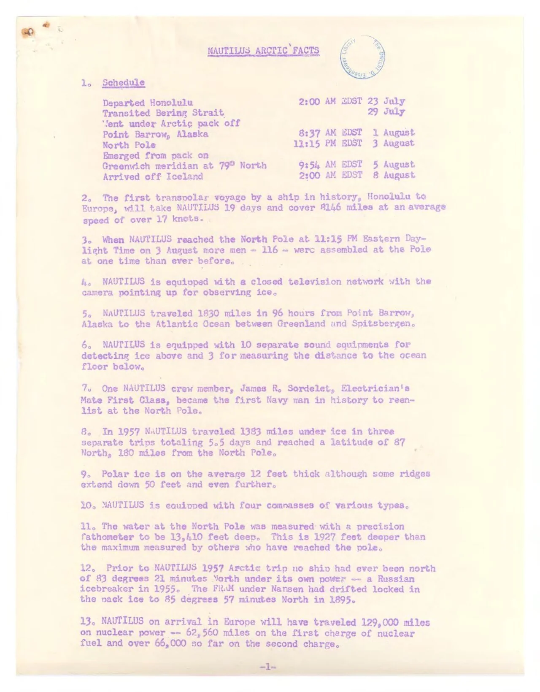
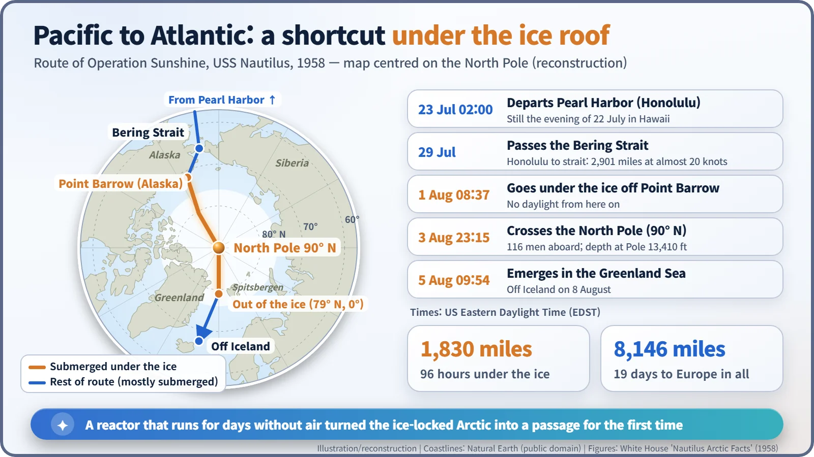
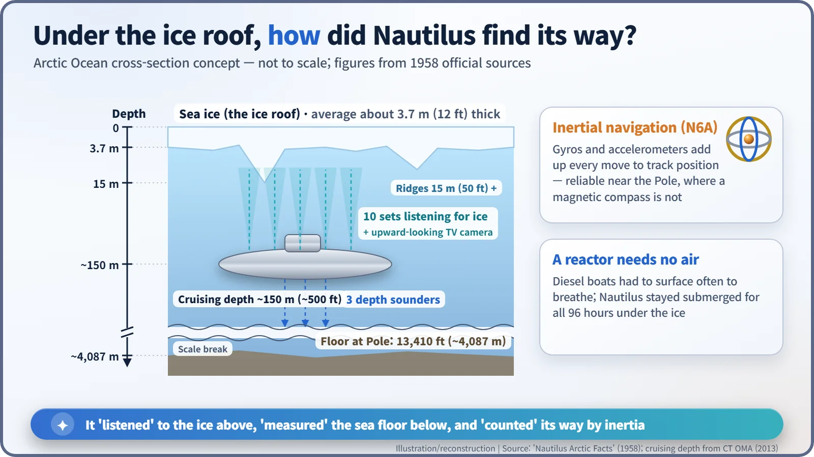
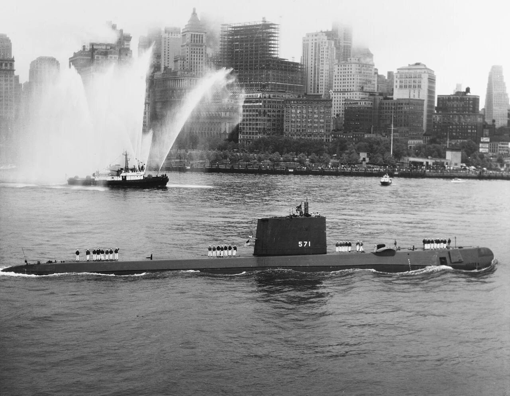

Nuclear History · 156
Steak and "North Pole Cake" — USS Nautilus Crosses the North Pole Under the Ice (Operation Sunshine, 1958)
After two failed tries, a submarine that never needed to breathe slipped under the Arctic pack off Alaska and came out four days later near Greenland.
In the summer of 1958, under the secret name Operation Sunshine, the nuclear submarine USS Nautilus sailed from Pearl Harbor, slipped beneath the Arctic pack ice off Alaska and crossed the North Pole submerged at 11:15 p.m. (US Eastern time) on 3 August. It covered 1,830 miles under the ice in 96 hours, something only an engine that needs no air could do.
A celebration dinner under the ice
Steak, French fries, creamed peas and carrots, fresh fruit salad, fresh bread — and something called "North Pole cake". That was the menu in the mess of the US nuclear submarine Nautilus in early August 1958, and we know it because the White House put it in an official fact sheet. The crew had just passed the North Pole — underneath the ice. [1]

Losing the space race, answering under the sea
On 4 October 1957 the Soviet Union launched Sputnik 1. The shock of being beaten in rocketry rippled through American society, and many historians argue that President Dwight D. Eisenhower (1890–1969) needed a showcase for a field where the United States clearly led. That field was nuclear submarines. [4]
The secret plan was called Operation Sunshine. Nautilus was commanded by 37-year-old Commander William R. Anderson (1921–2007). It was not his first try. In August–September 1957 the boat had probed the Arctic from the Atlantic side, but compass failures among other problems forced it to turn back at 87° North, about 180 miles short of the Pole. A Pacific attempt in June 1958 also failed: in the shallow Chukchi Sea, ice reaching unexpectedly deep blocked the way. Nautilus withdrew to Pearl Harbor to wait for better ice conditions. [1] [4]
Ninety-six hours without seeing the sky
The White House schedule, in US Eastern Daylight Time, tells the rest. Nautilus left Honolulu at 2:00 a.m. on 23 July — still the evening of 22 July in Hawaii, which is why the later unit citation dates the voyage "22 July to 5 August". It passed the Bering Strait on 29 July and at 8:37 a.m. on 1 August slipped under the Arctic pack off Point Barrow, Alaska. [1] [2]
Then, at 11:15 p.m. on 3 August, 90° North. Anderson counted down over the ship's loudspeaker and announced the Pole. Accounts differ on his exact words: one version is "For the world, our country, and the Navy — the North Pole", another "For the USA and the U.S. Navy: the North Pole". There were 116 men aboard; the White House boasted that more people had never been gathered at the Pole at one time. A precision echo sounder put the water depth there at 13,410 feet (about 4,087 m). [1] [4] [5]
At 9:54 a.m. on 5 August the submarine emerged from the pack in the Greenland Sea, near the point where the Greenwich meridian meets 79° North. From Point Barrow it had covered 1,830 miles in 96 hours under the ice (the fact sheet just says "miles"). The whole voyage, Honolulu to Europe, was planned at 19 days and 8,146 miles. After surfacing, Anderson sent a famously short message: "Nautilus 90 North". [1] [6]

No air, no compass
Why did this need a nuclear submarine? A diesel-electric submarine runs on batteries underwater. When they run down it must come up and breathe air to recharge them with its diesel engines — and under the ice there is nowhere to come up. A reactor makes steam from fission heat with no oxygen at all, so Nautilus could, in effect, hold its breath for days.
Finding the way was the other problem. Near the Pole a magnetic compass is of little use. The answer was an inertial navigation system: gyroscopes and accelerometers that keep adding up how far, and in which direction, the boat has moved. Think of finding your way with your eyes shut by counting steps and turns. The White House called Nautilus "the first combatant ship with an inertial navigation system", one that "works as well at the North Pole as anywhere else". [1]
The crew also kept a constant watch overhead. Ten separate sound sets listened for ice above, a closed-circuit television camera pointed upward, and three more sets measured the distance to the sea floor. The ice averaged about 12 feet (3.7 m) thick, but some ridges reached down 50 feet (15 m) or more. More than 11,000 soundings were logged across a poorly charted ocean basin. [1]

The White House, New York — and what "first" really means
On the afternoon of 8 August, Eisenhower presented Anderson with the Legion of Merit at the White House and awarded Nautilus the Presidential Unit Citation, which called the trip "the first voyage in history across the top of the world". After a call at Portland, England, Nautilus steamed into New York Harbor on 25 August 1958, greeted by fireboats throwing up plumes of water. [2] [3]

The word "first" needs care, though. Nautilus was the first vessel to cross the North Pole submerged. A week later, on 11 August, the nuclear submarine USS Skate also reached the Pole, and the first ship to reach it on the surface was the Soviet nuclear icebreaker Arktika in 1977.
Still, the message was clear. An engine that needs no air had turned the ice-locked Arctic Ocean into a passage between the Pacific and the Atlantic. And according to a story often told, when a condenser started leaking before the voyage, the crew bought bottles of a car-radiator leak sealant in Seattle and used it to stop the leak — a reminder that even a landmark nuclear voyage had its improvised, hands-on moments. [5]